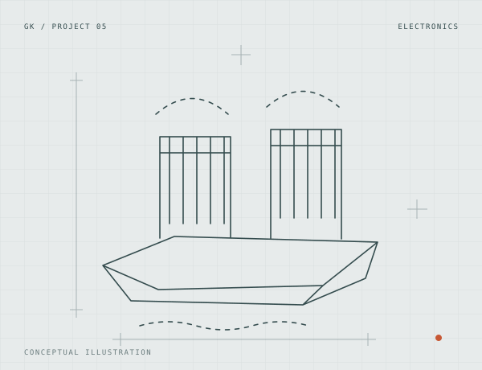

Budget e-bike conversion kit
Custom motor control, a printed hub motor, and a simple goal: make electric transportation more accessible.
An experimental remote-controlled boat propelled by ionic wind, with no moving propulsion parts.

I explored whether an ionic-wind thruster could propel a small boat. The prototype used two independently driven thrusters, allowing differential steering without a conventional propeller or rudder.
Electrode geometry and spacing strongly influenced the result. My early tests compared different gaps, and adjustable mounts made it possible to iterate. The project notes also record a mismatch between advertised supply ratings and observed behavior, reinforcing the need to test assumptions.
The prototype produced a functioning, low-efficiency RC boat. Its value was as an experiment in electrostatic propulsion and hands-on testing, rather than as a competitive replacement for a motor-driven boat.
Custom motor control, a printed hub motor, and a simple goal: make electric transportation more accessible.
An original RC aircraft design refined through years of builds, flight attempts, repairs, and redesigns.